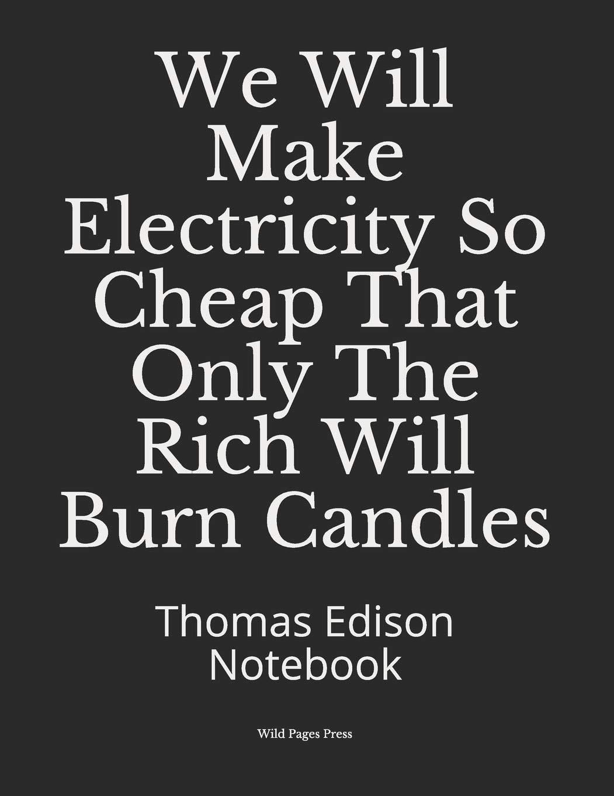
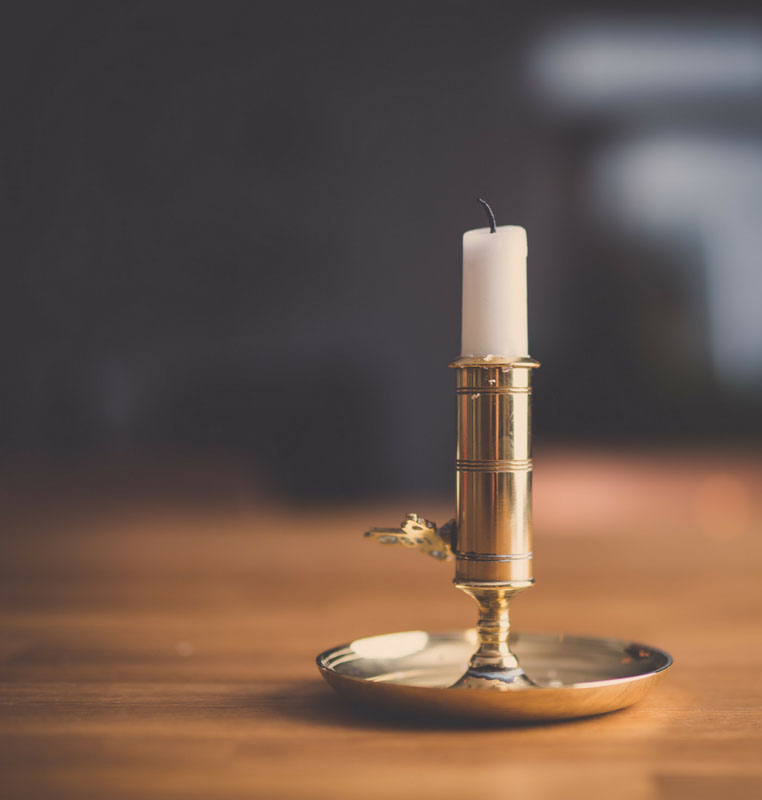
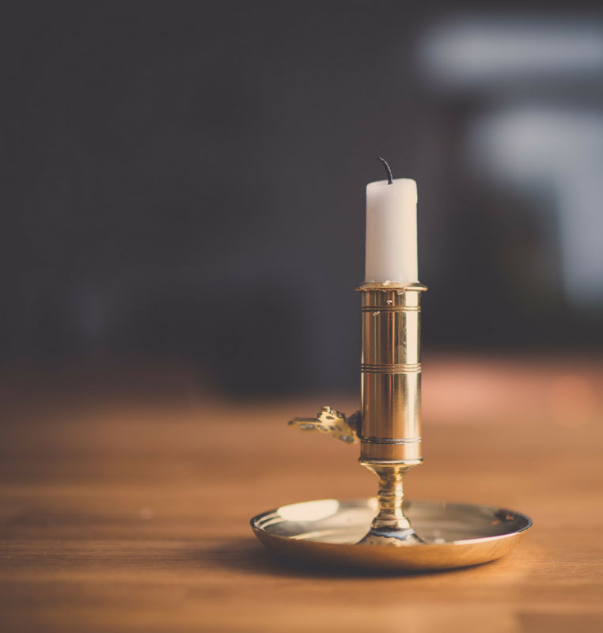

Significance of the Light Bulb
The light bulb helped to establish social order after sundown, extended the workday well into the night, and allowed us to navigate and travel safely in the dark. Without the light bulb, there would be no nightlife. It promoted economic growth because it made it possible to light factories and homes more safely. The discovery of the light bulb has also paved the way for millions of other insane technological discoveries and made seemingly impossible things possible!
 
